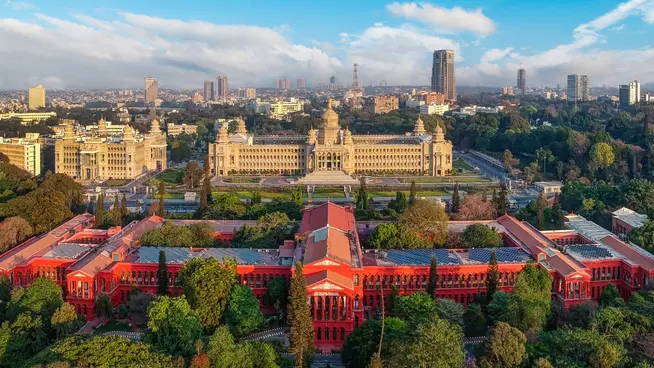

WebSciX 2026
20 Years of Web Science: Navigating the Era of Generative and Agentic AI
WebSciX India
WebSciX India is a proposed satellite event of the ACM Web Science Conference, dedicated to advancing the interdisciplinary study of the Internet, World Wide Web (WWW), and Artificial Intelligence (AI), and their impact on human lives in India and surrounding regions. WebSciX builds upon the Web Science for Development (WS4D) series of events conducted in India since 2019.
Web Science integrates disciplines such as computer science, sociology, economics, and policy studies to explore the socio-technical dynamics of digital ecosystems. WebSciX India aims to build a regional community of experts to investigate these dynamics within India’s unique socio-cultural, economic, and technological context, proposing innovative technologies and interventions to address local challenges.
With over 800 million Internet users as of 2025, India’s digital landscape is shaped by its 1.4 billion population, diverse cultures, and rapid technological adoption. India has also made great strides in innovative use of these technologies including digital identity, payments, technology-enhanced education, and web-enabled public services. However, challenges such as digital divides, misinformation, and privacy concerns remain, demanding a localized Web Science approach.
🌆 Bengaluru, Karnataka, India

Bengaluru, widely recognized as the Silicon Valley of India, has rapidly evolved into a global epicenter of technological innovation and economic growth. The city hosts a powerful ecosystem of multinational technology companies, high-growth startups, and premier research institutions, alongside key government organizations such as IISc, ISRO, and DRDO. This convergence has driven a remarkable boom in deep technology, artificial intelligence, and data-driven industries, attracting significant global investment and talent.
As a preferred destination for international summits, innovation forums, and technology conferences, Bengaluru continues to play a pivotal role in shaping the global narrative around emerging technologies. The city's vibrant startup culture and strong research ecosystem foster interdisciplinary collaboration across academia, industry, and government.
This dynamic growth is further strengthened by Bengaluru’s deep academic roots and culture of innovation. Its ecosystem thrives on experimentation, entrepreneurship, and scalable impact, making it a fertile ground for transformative ideas and sustained technological advancement.
Yet, beyond its technological prominence, Bengaluru remains deeply rooted in its cultural heritage. The city’s traditions in music, art, and literature coexist harmoniously with its modern identity. With its tree-lined avenues, diverse communities, and cosmopolitan spirit, Bengaluru provides an inspiring environment for global collaboration and meaningful dialogue.
📍 Conference Venue
IIIT Bangalore Campus
26/C Electronics City Phase 1, Hosur Road, Bengaluru, Karnataka 560100

IIIT Bangalore Campus
Travelling within Bengaluru
From Airport:
Please take the air-conditioned Volvo airport bus KIAS-8 and get off at Electronics City, Infosys campus (last stop). The journey takes approximately 2 to 2.5 hours depending on traffic, with a fare of about ₹330 (~$5). Luggage space is available on these buses.
From City Center (Majestic):
Take the air-conditioned Volvo bus 356C and get off at Electronics City, Infosys campus (last stop). The journey takes approximately 1 to 1.5 hours depending on traffic, with a fare of about ₹80 (~$1.5). These buses do not provide dedicated luggage space.
From other parts of Bengaluru:
Travel to Majestic via the nearest bus or metro connection, and continue onward to Electronics City.
Other modes of transport:
Taxi services such as Uber and Ola are widely available, with fares typically ranging between ₹500 and ₹1000 depending on distance and traffic.